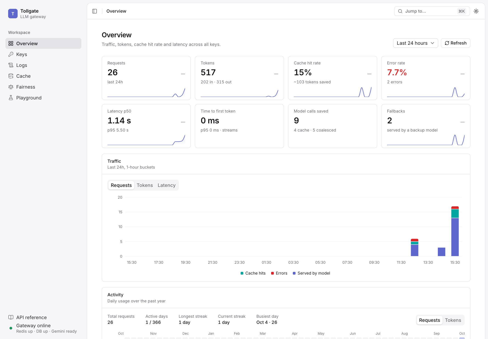
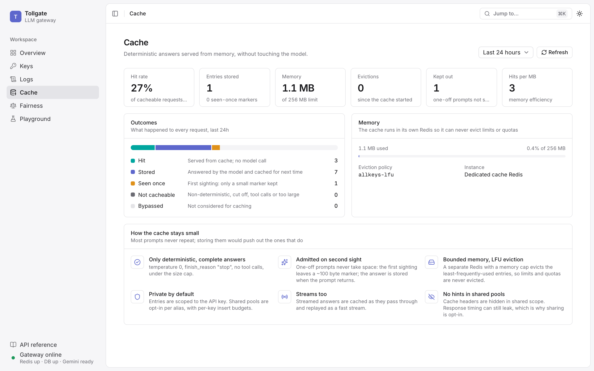
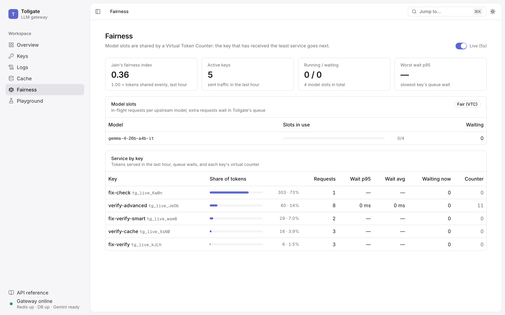
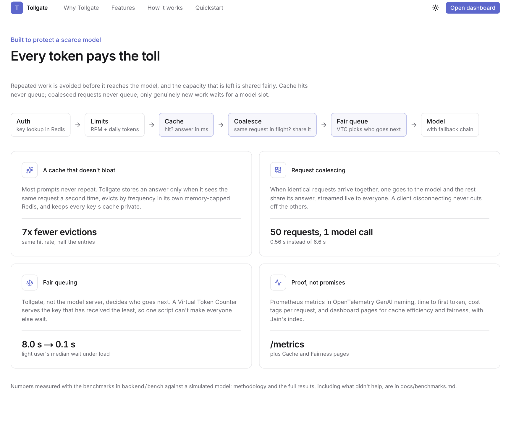

Every token pays the toll. A self-hostable, OpenAI-compatible gateway that sits between applications and AI models. It controls who may use the models and how much, avoids paying twice for the same work, shares capacity fairly, and shows exactly what is happening.
This document explains the whole system in plain language: what it does, how a request moves through it, how each feature works, how to run and operate it, and where everything lives in the code.
Think of a toll gate on a road. Every car (a request from an app) passes through it. The gate checks the car is allowed (an API key), makes sure it hasn't used the road too much today (limits and quotas), waves through cars it already knows the answer for (the cache), lets cars going to exactly the same place travel together (coalescing), and lets cars onto a narrow bridge in a fair order (the fair queue). Behind the gate is the road itself: an AI model.
Applications don't need to change. Tollgate speaks the same language as OpenAI's API, so an app only changes
one setting, its base_url, from OpenAI's address to Tollgate's. Everything else (the SDK, the code)
stays the same.
It runs with one command (docker compose up -d). By default the models come from Google's Gemini API, so
the machine running Tollgate stays light; switching to fully local models with Ollama is one setting.
| Person | What they do |
|---|---|
| Developer | Gets a key (tg_live_...) and points their OpenAI SDK, n8n, Open WebUI or script at Tollgate. Picks a model alias such as fast or smart. |
| Operator / team lead | Runs Tollgate, creates and revokes keys, watches usage, cache efficiency, fairness and errors in the dashboard, and tests models in the Playground. |
| Self-serve user (optional) | When accounts are switched on, signs in (Google, GitHub or email) and manages only their own keys and usage, within limits set by the operator. |
Tollgate is a handful of small services that Docker Compose starts together:
| Part | What it is for |
|---|---|
| Gateway (FastAPI) | The heart. Handles every model request (/v1) and every management request (/admin). |
| Dashboard (Next.js) | The web app: landing page plus the operator console at /dashboard. |
| Redis: state | Fast memory for key lookups, rate-limit counters and daily token usage. Never throws data away and is saved to disk. |
| Redis: cache | A separate, memory-capped Redis that holds cached answers and evicts the least-used ones when full. |
| Postgres | Durable storage for keys and the request log. Bundled locally, or a managed database such as Neon. |
| Models | Google's Gemini API (default) or Ollama running open models locally. A mock model that always fails is included for demos. |
| Clerk (optional) | Sign-in for teams. Without it, the dashboard is a single-user console that only answers on localhost. |
When an app sends a question, it passes through seven steps. Each step can finish the request early, which is what keeps the model from doing unnecessary work.
Retry-After header saying when to try again.Every response carries headers that tell the caller what happened: which model answered, whether it came from cache, whether it was shared, how long it waited, and how much of the limit is left.
Keys look like tg_live_ followed by 32 random characters. The full key is shown once, when it is created;
only a fingerprint (a SHA-256 hash) is stored, so even someone reading the database cannot use the keys. Revoking a key
takes effect immediately. Each key has its own requests-per-minute limit and daily token budget.
Apps ask for an alias, not a specific model. Each alias is a short list of models tried in order:
| Alias | Gemini API (default) | Ollama (local) | Notes |
|---|---|---|---|
fast | gemma-4-26b-a4b-it | gemma3:1b | Quick and cheap |
smart | gemma-4-31b-it, then fast | gemma3:4b, then gemma3:1b | Falls back if the big model fails or is slow |
smart-terse | like smart | like smart | Asks for the shortest correct answer |
faq | like fast | like fast | Uses the shared cache pool |
demo-failover | mock (always fails), then fast | same | Shows fallback working |
A circuit breaker protects the system from a model that keeps failing:
Gateway-side waiting (a full queue) is never counted as the model failing, so a busy period can't take a healthy model offline.
Most questions are only ever asked once. A cache that stores everything fills up with them and throws out the answers people actually reuse. Tollgate uses six layers of defense:
faq alias) is opt-in, with a per-key
limit on how many new entries each key may add per minute.Streamed answers are cached too: they are assembled as they pass through and replayed as a fast stream later.
Only requests that could be cached are coalesced, and only within one key. Each caller is billed for the tokens it received. If two or more callers shared an answer, it is clearly popular, so it is cached straight away.
A model can only work on a few requests at once (its slots). Normally the model server queues the rest first come, first served, so one script sending 100 requests makes everyone else wait behind all of them. Tollgate takes that decision away from the model server: it never sends more than the slot count and keeps the waiting line itself.
This follows the published method Fairness in Serving Large Language Models (Sheng et al., OSDI 2024).
Answers can stream word by word (Server-Sent Events). Tollgate relays the stream unchanged, counts tokens as they pass, and still bills correctly if the client disconnects. If the model breaks mid-answer, the client receives an error event and the failure is logged and counted.
The smart-terse alias adds an instruction to answer as briefly as possible. In one test it produced 85% fewer
output tokens for the same question.
Each log entry records the key, alias, model used, tokens, latency, status, cache outcome, whether it was shared, how long it waited for a slot, time to first token, and any cost tags sent with the request.
The dashboard has a light and a dark theme and a command menu (Cmd/Ctrl + K).
| Page | What it shows |
|---|---|
| Overview | Requests, tokens, cache hit rate, error rate, latency, time to first token and model calls saved, each with the change from the previous period; a traffic chart; a year-long activity heatmap; status mix; latency distribution; usage by key, alias and model. |
| Keys | Create (key shown once), list with today's usage, revoke. |
| Logs | Every request with status, tokens, latency, time to first token, queue wait, and badges for cache, coalescing, fallback and tags. Filters by key, alias and status. |
| Cache | Hit rate, stored entries, memory used against the limit, evictions, how many one-off prompts were kept out, and what happened to every request. |
| Fairness | Live: model slots in use, requests waiting, each key's share of tokens and queue waits, its fairness counter, and Jain's fairness index. |
| Playground | Chat with any alias through the gateway and see every header the gateway returned. |




localhost. That also blocks a
trick called DNS rebinding. The API and dashboard can be exposed separately, so sharing the API never exposes the
dashboard.git clone https://github.com/sumitsingh3072/tollgate.git cd tollgate cp .env.example .env # paste a free Gemini key into GEMINI_API_KEY docker compose up -d # open http://localhost:3000
| Want | Do this |
|---|---|
| Fully local models | Set UPSTREAM_PROVIDER=ollama and run docker compose --profile ollama up -d (first start downloads about 4 GB). |
| A managed database | Set DATABASE_URL (for example a Neon connection string). |
| Let other machines call the API | Set GATEWAY_BIND_ADDRESS=0.0.0.0 and put TLS in front. |
| Host the dashboard for a team | Add Clerk keys, set DASHBOARD_BIND_ADDRESS=0.0.0.0, the public URLs, then docker compose up -d --build. |
| Stop | docker compose down (data is kept in volumes). |
| Setting | Default | Meaning |
|---|---|---|
| GEMINI_API_KEY | (empty) | Key for the default model provider |
| UPSTREAM_PROVIDER | gemini | gemini or ollama |
| DATABASE_URL | bundled Postgres | Where keys and logs are stored |
| ADMIN_TOKEN | generated | Set it only to call /admin yourself |
| Clerk keys | (empty) | Turn on sign-in and per-user data |
| UPSTREAM_MAX_PARALLEL | 4 | Requests per model at once; the rest wait fairly |
| FAIR_MAX_QUEUE_PER_KEY / FAIR_MAX_WAIT_S | 20 / 30 | When waiting turns into a 429 |
| CACHE_TTL / CACHE_MAX_MEMORY | 24 h / 256 MB | How long and how much to cache |
| COALESCING_ENABLED | true | Share identical in-flight requests |
| FALLBACK_TIMEOUT | 30 s | How long to wait before trying the next model |
| USER_MAX_KEYS / USER_MAX_RPM / USER_MAX_DAILY_TOKENS | 5 / 120 / 500,000 | Caps for signed-in users |
The full list with explanations is in .env.example and the README.
x-tollgate-model, x-tollgate-cache,
x-tollgate-coalesce, x-tollgate-fallback, x-tollgate-queue-wait-ms,
x-ratelimit-* and x-request-id./metrics (with the admin token): token usage, request duration, time to
first token, cache outcomes, coalesced requests, queue depth and queue wait. Names follow the OpenTelemetry GenAI
conventions./health/live says the process is up; /health checks Redis, the database
and the model provider, and drives the status light in the dashboard sidebar.Cost tags: apps can send x-tollgate-tags: feature=search,team=growth; the logs can then be filtered by tag.
Measured with the scripts in backend/bench against a simulated model, so they are repeatable and free. Full
method in docs/benchmarks.md.
| Test | Without | With |
|---|---|---|
| 50 identical requests at once | 50 model calls, 6.61 s | 1 model call, 0.56 s (coalescing) |
| A light user behind a heavy one (1 model slot) | median wait 8.03 s | 0.10 s (fair queue) |
| 5,000 requests, 40% one-off, 2 MB cache | 607 entries, 2,943 evictions | 277 entries, 413 evictions, same hit rate |
| Path | What is there |
|---|---|
| backend/app/main.py | App start-up and shutdown, health checks, /metrics |
| backend/app/api/v1.py | The request pipeline for /v1/chat/completions |
| backend/app/api/admin.py | Keys, stats, logs, cache, coalescing, fairness, activity endpoints |
| backend/app/core/cache.py | Cache eligibility, keys, admission, scopes, stream replay |
| backend/app/core/coalesce.py | Flights: sharing identical in-flight requests |
| backend/app/core/fair_queue.py | Fair scheduler (Virtual Token Counter) and backpressure |
| backend/app/core/fallback.py | Alias chains, circuit breaker, fallback deadline |
| backend/app/core/limits.py, keys.py | Rate limits, quotas, key format and lookup cache |
| backend/app/db/ | Tables, start-up migrations, queries and analytics |
| backend/app/logging_queue.py | Batched request logging |
| backend/app/telemetry/metrics.py | Prometheus metrics |
| backend/bench/ | Benchmarks and the simulated model |
| backend/tests/ | 162 automated tests |
| frontend/app/(marketing)/ | Landing page |
| frontend/app/(app)/dashboard/ | Dashboard pages |
| frontend/lib/server/gateway.ts | The only place the admin token is used |
| frontend/proxy.ts | Sign-in and the localhost-only rule |
| docker-compose.yml | All services and how they start |
| docs/ | Plan, architecture, phases, benchmarks, this document |
| Task | How |
|---|---|
| Create or revoke a key | Dashboard, Keys page (or POST / DELETE /admin/keys) |
| See why a request was slow | Logs page: latency, time to first token, queue wait, fallback badge; or search the gateway logs by x-request-id |
| Model too busy (429 queue_full / queue_timeout) | Raise UPSTREAM_MAX_PARALLEL if the provider allows, or slow the client |
| Change models | Set GEMINI_*_MODEL or OLLAMA_*_MODEL, then docker compose up -d |
| Add an alias | Edit build_aliases in backend/app/config.py |
| Rebuild after changing Clerk keys or public URLs | docker compose up -d --build |
| Run the tests | cd backend && .venv/bin/pytest; cd frontend && pnpm lint && pnpm build |
| Back up | Back up the Postgres database (keys and logs). The cache is disposable. |
| Term | Meaning |
|---|---|
| Alias | A friendly model name (fast, smart) that maps to a list of real models |
| Coalescing | Letting identical requests share one model call |
| Leader / follower | The request that calls the model / the ones that share its answer |
| Slot | One request the model can work on at a time |
| VTC | Virtual Token Counter: a running total of service each key has received |
| Jain's index | A fairness score from 1/n (one key got everything) to 1.0 (perfectly even) |
| Admission | Deciding whether an answer deserves cache space |
| LFU | Least Frequently Used: when memory is full, evict what is used least often |
| TTFT | Time to first token: how long until the first word of a streamed answer |
| Circuit breaker | Temporarily skipping a model that keeps failing |
| SSE | Server-Sent Events: how answers stream word by word |
| Scope | Who may share a cache entry: one key (private) or everyone (shared) |